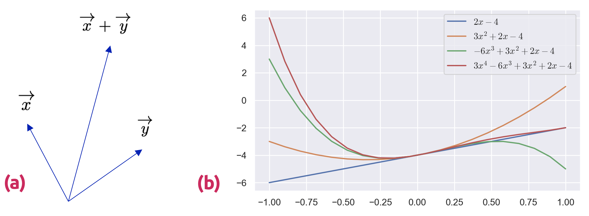
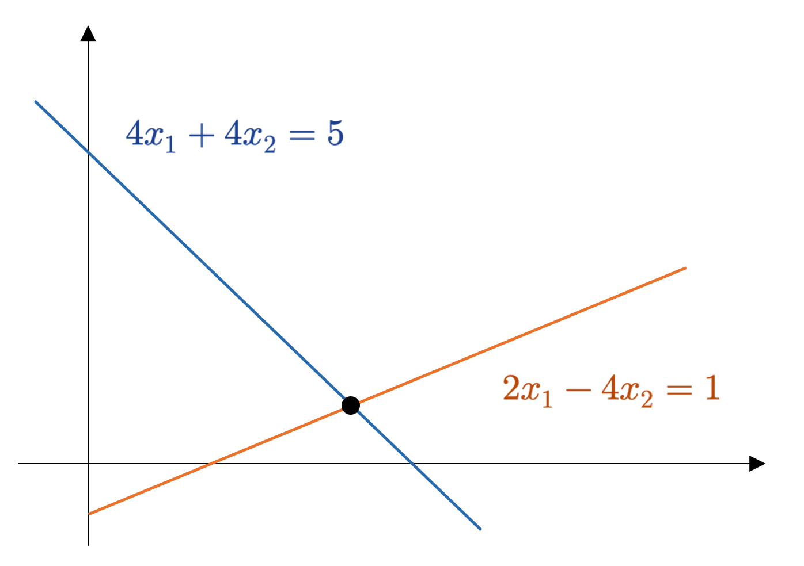
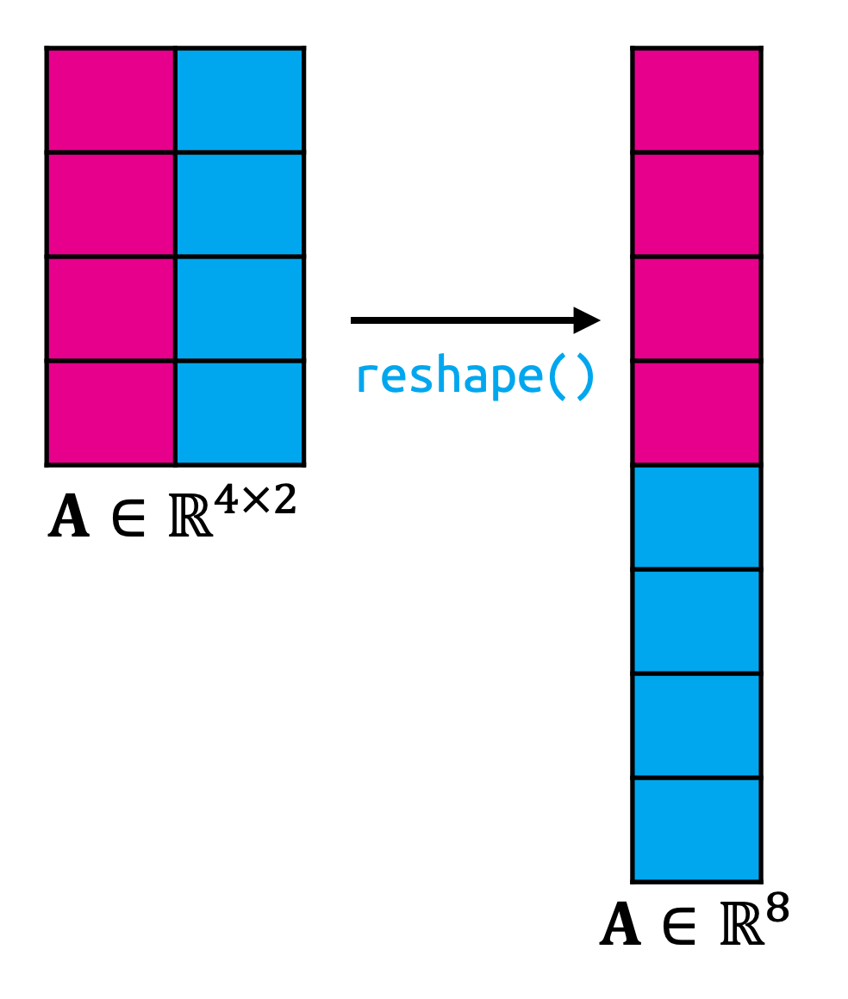
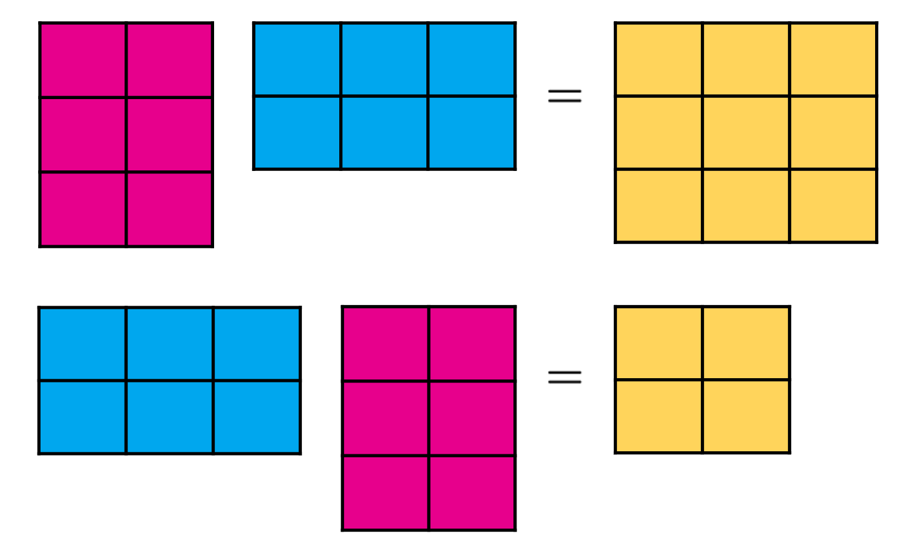
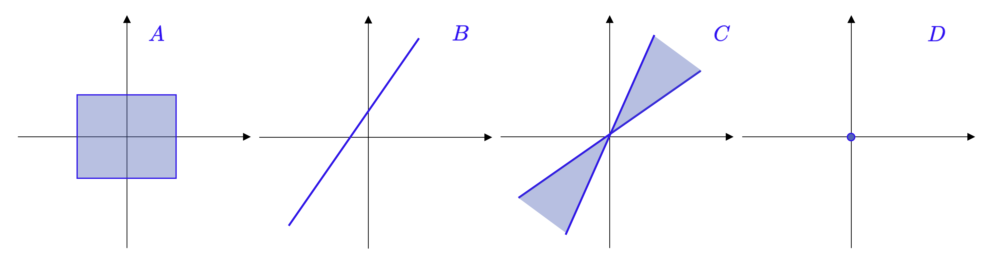

import numpy as npEspacios vectoriales
Definición formal, intuición y primeros ejemplos
ImportantIdea central
Un espacio vectorial es una estructura algebraica que permite sumar objetos y multiplicarlos por escalares, preservando un conjunto de axiomas que hacen posible trabajar con linealidad de manera rigurosa. Antes de proceder a introducir este importante concepto, haremos un (no tan breve) repaso de álgebra lineal y de sus aspectos más elementales, los que nos servirán para darle sentido a su definición a nivel estructural.
Introducción.
Cuando formalizamos conceptos intuitivos, un enfoque muy utilizado es construir un conjunto de objetos (símbolos) y reglas para manipular tales objetos. Ambos constituyen un marco de referencia que suele ser denominado como un álgebra. En particular, el álgebra lineal es el estudio de elementos conocidos como vectores y de un conjunto de reglas que permiten manipular adecuadamente estos vectores. Los vectores solemos conocerlos por primera vez en la enseñanza media, cuando en los cursos de Física abordamos ciertos cálculos soportados por elementos geométricos que solemos denotar por símbolos tales como \(\overrightarrow{x}\) o \(\overrightarrow{y}\). En esta entrada, discutiremos conceptos más generales de vectores y, de aquí en adelante, usaremos una letra en negrita para representarlos cuando éstos sean tuplas de \(\mathbb{R}^{n}\); por ejemplo, \(\mathbf{x}\) o \(\mathbf{y}\).
En general, los vectores son objetos especiales que pueden sumados y multiplicados por escalares para producir otro objeto del mismo tipo. Desde un punto de vista matemático y abstracto, cualquier objeto que satisfaga estas dos propiedades puede ser considerado un vector. A continuación, revisaremos ejemplos de este tipo de objetos:
Vectores geométricos: Este ejemplo resulta familiar para estudiantes de secundaria que hayan cursado las asignaturas de física y matemáticas. Los vectores geométricos, como se observa en la Figure 1 (a), corresponden a segmentos con una dirección bien definida, los cuales pueden ser dibujados (al menos en dos o tres dimensiones). Dos vectores geométricos, digamos \(\overrightarrow{x}\) e \(\overrightarrow{y}\), pueden sumarse, de tal forma que \(\overrightarrow{x} + \overrightarrow{y} = \overrightarrow{z}\) es otro vector. Además, la multiplicación de cualquier vector por un escalar arbitrario \(\lambda \in \mathbb{R}\), \(\lambda \overrightarrow{x}\), también da como resultado otro vector. De hecho, el resultado de la última operación no es más que el mismo vector amplificado por un factor de escalamiento \(\lambda\). Por lo tanto, los vectores geométricos son instancias del concepto de vector que discutimos en un principio. La interpretación de vectores como objetos geométricos nos permite utilizar nuestra intuición para entender conceptos tales como la dirección y la magnitud de un vector, así como la aritmética entre ellos.
Los polinomios también son vectores: Cualquier expresión de la forma \(y=\displaystyle \sum\nolimits^{n}_{i=0} a_{i}x^{i}\), con \(\left\{ a_{i}\right\}^{n}_{i=1} \in \mathbb{C}\), se denomina polinomio de orden \(n\) (para \(n\neq 0\)), y el conjunto de todos ellos se denota como \(\mathbb{R}_{n}[x]\). Se observan algunos ejemplos en la Figure 1 (b). Dos polinomios pueden sumarse entre ellos, dando lugar a un nuevo polinomio. Además, cualquier multiplicación de un polinomio por un escalar también dará lugar a un nuevo polinomio. Por lo tanto, los polinomios constituyen también una instancia del concepto de vector discutido previamente. Estos objetos son muy distintos de los vectores geométricos, ya que si bien pueden graficarse en el plano, son entidades con un nivel muy superior de abstracción.

Las señales de audio son vectores: Dichas señales son representadas como una serie de números. Podemos, igualmente, sumar entre sí este tipo de señales, siendo su suma una nueva señal de audio. Si escalamos una señal de audio multiplicándola por un escalar, también obtendremos una nueva señal. Por lo tanto, bajo nuestra primera conceptualización, las señales de audio son también vectores.
Los elementos de \(\mathbb{R}^{n}\) (tuplas de \(n\) números reales) son también vectores: Estos vectores serán el tipo de objeto que abordaremos con mayor detenimiento en estos apuntes. Por ejemplo, \(\mathbf{a}=(1, 2, 3)\in \mathbb{R}^{3}\) es una tripleta de números que conforman un vector en un espacio euclídeo de tres dimensiones. La adición de dos vectores \(\mathbf{a}, \mathbf{b} \in \mathbb{R}^{3}\), componente a componente, genera un nuevo vector (que podemos escribir como \(\mathbf{c} = \mathbf{a} + \mathbf{b}\)). Además, la multiplicación de un vector arbitrario \(\mathbf{a} \in \mathbb{R}^{n}\) por un escalar \(\lambda \in \mathbb{R}\) resulta en otro vector (que podemos escribir como \(\mathbf{d} = \lambda \mathbf{a}\)). La consideración de estas tuplas como vectores tiene el beneficio adicional de que es posible representar tales objetos como arreglos a nivel computacional (por ejemplo, en Python, podemos utilizar listas, tuplas o arreglos de Numpy para representar vectores).
El álgebra lineal se enfoca, principalmente, en las similitudes existentes entre estos conceptos de vector. Podemos sumar vectores y multiplicarlos por escalares. Nos enfocaremos fundamentalmente en vectores en \(\mathbb{R}^{n}\), debido a que la mayoría de los algoritmos basados en álgebra lineal se formulan en dicho conjunto. Más adelante, veremos que con frecuencia consideraremos que la data del mundo real se representará mediante vectores en \(\mathbb{R}^{n}\). Además, nos limitaremos al estudio de otras estructuras generales como espacios vectoriales cuya dimensión será finita, de tal forma que siempre habrá una correspondencia 1 a 1 entre cualquier tipo de vector y el conjunto \(\mathbb{R}^{n}\). Cuando sea conveniente (y para ir migrando poco a poco al dominio de lo que es la implementación de estos conocimientos en la práctica), utilizaremos nuestra intuición relativa a vectores geométricos y consideraremos algoritmos basados en estructuras tales como arreglos.
Una idea importante en matemáticas corresponde al concepto de clausura. La pregunta asociada a la formulación de dicho concepto es la siguiente: ¿Cuál es el conjunto de todos los objetos que pueden resultar de las operaciones que propongamos? O en el caso de los vectores: ¿Cuál es el conjunto de vectores que pueden resultar partiendo de un conjunto pequeño de vectores iniciales, sumándolos y escalándolos? Esto último resulta en un espacio vectorial (que veremos en detalle más adelante), el cual es un concepto que conforma la base de mucho de lo que comporta a lo relativo a Machine Learning (aprendizaje automatizado), una serie de pautas, metodologías y algoritmos que permiten modelar una serie de procesos, fenómenos y sistemas.
Sistemas de ecuaciones lineales.
Los sistemas de ecuaciones lineales juegan un papel fundamental en el álgebra lineal. Muchos problemas físicos (en todo tipo de contextos fenomenológicos e industriales) pueden ser resueltos mediante la formulación de los mismos en base a sistemas de ecuaciones lineales y, como cabría esperar, el álgebra lineal nos entrega las herramientas para resolverlos.
Ejemplo 1.1: Una compañía produce diferentes productos \(N_{1},...,N_{n}\) para los cuales se requieren varios recursos \(R_{1},...,R_{m}\). Para producir una unidad del producto \(N_{j}\), se necesitan \(a_{ij}\) unidades del recurso \(R_{i}\), donde \(1\leq i\leq m\) y \(1\leq j\leq n\).
El objetivo es encontrar un plan de producción óptimo; es decir, un plan que estime cuántas unidades \(x_{j}\) del producto \(N_{j}\) deberían ser producidos si un total de \(b_{i}\) unidades del recurso \(R_{i}\) están disponibles y (idealmente) se utilizan todos los recursos disponibles (no quedan holguras de ninguno).
Si producimos \(x_{1},...,x_{n}\) unidades de los productos respectivos, necesitamos un total de
\[ a_{i1}x_{1}+\cdots +a_{in}x_{n} \tag{1.1} \]
unidades del recurso \(R_{i}\). Un plan de producción óptimo \((x_{1},...,x_{n})\in \mathbb{R}^{n}\), por lo tanto, debe satisfacer el siguiente sistema de ecuaciones lineales:
\[ \begin{array}{rlr}a_{11}x_{1}+a_{12}x_{2}+\cdots +a_{1n}x_{n}&=&b_{1}\\ a_{21}x_{1}+a_{22}x_{2}+\cdots +a_{2n}x_{n}&=&b_{2}\\ \vdots &&\\ a_{m1}x_{1}+a_{m2}x_{2}+\cdots +a_{mn}x_{n}&=&b_{m}\end{array} \tag{1.2} \]
Donde \(a_{ij}\) y \(b_{i}\in \mathbb{R}\). ◼︎
La ecuación (1.2) ilustra el esquema general de un sistema de ecuaciones lineales, donde los valores \(x_{1},...,x_{n}\) son las incógnitas del sistema. Cada tupla \(\mathbf{x}=(x_{1},...,x_{n})\in \mathbb{R}^{n}\) que satisface (1.2) es una solución del sistema.
Ejemplo 1.2: El sistema de ecuaciones lineales
\[ \begin{array}{rcll}x_{1}+x_{2}+x_{3}&=&3&\left( 1\right) \\ x_{1}-x_{2}+2x_{3}&=&2&\left( 2\right) \\ 2x_{1}+3x_{3}&=&1&\left( 3\right) \end{array} \tag{1.3} \]
no tiene solución. Si sumamos las ecuaciones (1) y (2), obtenemos \(2x_{1}+3x_{3}=5\), lo que contradice (3).
Ahora observemos el siguiente sistema de ecuaciones:
\[ \begin{array}{rcll}x_{1}+x_{2}+x_{3}&=&3&\left( 1\right) \\ x_{1}-x_{2}+2x_{3}&=&2&\left( 2\right) \\ x_{2}+x_{3}&=&1&\left( 3\right) \end{array} \tag{1.4} \]
De (1) y (3), se tiene que \(x_{1}=1\). De la operación (1) + (2), obtenemos \(2x_{1}+3x_{3}=5\), lo que implica que \(x_{3}=1\). De (3), obtenemos que \(x_{2}=1\). Por lo tanto, el vector \(\mathbf{x}=(x_{1}, x_{2}, x_{3})=(1, 1, 1)\) es la única y posible solución del sistema.
Consideremos, como tercer ejemplo, el siguiente sistema de ecuaciones:
\[ \begin{array}{rcll}x_{1}+x_{2}+x_{3}&=&3&\left( 1\right) \\ x_{1}-x_{2}+2x_{3}&=&2&\left( 2\right) \\ 2x_{1}+3x_{3}&=&5&\left( 3\right) \end{array} \tag{1.5} \]
Dado que (1) + (2) = (3), podemos omitir la tercera ecuación, ya que resulta ser redundante. De (1) y (2), obtenemos \(2x_{1}=5-3x_{3}\) y \(2x_{2}=1+x_{3}\). Definimos \(x_{3}=a\in \mathbb{R}\) con una variable libre, de manera que cualquier tripleta del tipo \(\left( \frac{1}{2} \left( 5-3a\right) ,\frac{1}{2} \left( 1+a\right) ,a\right)\in \mathbb{R}^{3}\) es una solución de (1.5). Por lo tanto, el conjunto definido previamente establece infinitas soluciones para el sistema. ◼︎
En general, para un sistema de ecuaciones lineales con dominio en un subconjunto de \(\mathbb{R}\), pueden darse tres casos distintos: El sistema no tiene solución, tiene una solución única, o bien, tiene infinitas soluciones. El modelo de regresión lineal, por ejemplo (y como ya veremos más adelante), es un caso particular de solución analíticamente cerrada de un sistema de ecuaciones lineales cuando no podemos resolver dicho sistema por métodos más convencionales.
En un sistema de ecuaciones con dos variables, digamos \(x_{1}\) y \(x_{2}\), cada ecuación lineal define una recta en el plano \((x_{1},x_{2})\). Dado que una solución para el sistema debe satisfacer simultáneamente todas sus ecuaciones, el conjunto solución del mismo corresponde a la intersección de ambas rectas. Esta intersección puede estar representada por otra recta (si las ecuaciones lineales respectivas describen a la misma recta), un punto, o un conjunto vacío (cuando ambas rectas son paralelas). En la Figure 2 se observa un ejemplo geométrico de representación de la solución de un sistema lineal descrito por las ecuaciones
\[ \begin{array}{lll}4x_{1}+4x_{2}&=&5\\ 2x_{1}-4x_{2}&=&1\end{array} \tag{1.6} \]
donde el espacio solución es el punto \((x_{1},x_{2})=\left( 1,\frac{1}{4} \right)\).

Similarmente, para un sistema de tres ecuaciones, cada ecuación describe un plano en el espacio \(\mathbb{R}^{3}\). Cuando intersectamos estos planos (satisfacer las tres ecuaciones de manera simultánea), podemos obtener un conjunto solución que puede ser un plano, una recta, un punto o un conjunto vacío (cuando los planos no tienen una intersección común).
Para construir un enfoque sistemático a fin de resolver de manera general un sistema lineal de ecuaciones, introduciremos una notación compacta muy útil para estos efectos. Vamos a construir un arreglo vectorial con los coeficientes \(a_{ij}\) y, a su vez, arreglaremos cada uno de estos vectores en una estructura más general, conocida como matriz. En otras palabras, escribiremos el sistema de ecuaciones (1.2) como
\[ \left( \begin{matrix}a_{11}\\ \vdots \\ a_{m1}\end{matrix} \right) x_{1}+\left( \begin{matrix}a_{12}\\ \vdots \\ a_{m2}\end{matrix} \right) x_{2}+\cdots +\left( \begin{matrix}a_{1n}\\ \vdots \\ a_{mn}\end{matrix} \right) x_{n}=\left( \begin{matrix}b_{1}\\ \vdots \\ b_{m}\end{matrix} \right) \tag{1.7} \]
El cual puede reordenarse conforme el uso de matrices como
\[ \left( \begin{matrix}a_{11}&\cdots &a_{1n}\\ \vdots &\ddots &\vdots \\ a_{m1}&\cdots &a_{mn}\end{matrix} \right) \left( \begin{matrix}x_{1}\\ \vdots \\ x_{n}\end{matrix} \right) =\left( \begin{matrix}b_{1}\\ \vdots \\ b_{m}\end{matrix} \right) \tag{1.8} \]
A continuación, nos detendremos a revisar el concepto de matriz y definiremos ciertas reglas para operar con ellas. Una vez hecho eso, volveremos al tema de los sistemas lineales de ecuaciones para mostrar como resolverlos usando estos maravillosos artilugios.
Warning¡Ojo!
Las matrices son objetos importantísimos en la teoría del aprendizaje automático. Tanto es así que los incito a aceptar que la utilización de matrices derivará siempre en la mejor y más simple forma de explicar la mayoría de los arquetipos esenciales de modelos predictivos que subyacen a esta teoría.
Matrices.
Las matrices juegan un papel fundamental en el álgebra lineal. Pueden ser utilizadas para representar de manera compacta sistemas de ecuaciones lineales, además de otras entidades con un trasfondo mucho más profundo, como es el caso de las trasformaciones lineales (y que veremos más adelante). Antes de discutir estos tópicos (que resultan ser ciertamente muy interesantes), primero definiremos qué es una matriz y qué podemos hacer con ellas. Veremos más propiedades de las matrices cuando comencemos a abordar temas un tanto más complejos y que tienen aplicaciones muy importantes en el contexto de la ciencia de datos, como las descomposiciones matriciales.
Definición 1.1 – Matriz: Sean \(m\) y \(n\) dos números naturales. Una matriz con valores reales de dimensión \(m\times n\), que denotamos como \(\mathbf{A}\), es un arreglo rectangular con \(m\) filas y \(n\) columnas, donde cada valor en la posición \((i, j)\) es denotado como \(a_{ij}\), siendo \(1\leq i\leq m\) y \(1\leq j\leq n\) y \(a_{ij}\in \mathbb{R}\). La matriz \(\mathbf{A}\) puede ser escrita entonces como
\[ \mathbf{A} =\left( \begin{matrix}a_{11}&a_{12}&\cdots &a_{1n}\\ a_{21}&a_{22}&\cdots &a_{2n}\\ \vdots &\vdots &\ddots &\vdots \\ a_{m1}&a_{m2}&\cdots &a_{mn}\end{matrix} \right) \tag{1.9} \]
Por convención, las matrices de dimensión \(1\times n\) son llamadas matrices fila, mientras que aquellas de dimensión \(m\times 1\) son llamadas matrices columna. El conjunto de todas las matrices con elementos reales de dimensión \(m\times n\) suele escribirse como \(\mathbb{M}_{\mathbb{R}}(m,n)\) o \(\mathbb{R}^{m\times n}\). Esta última notación suele utilizarse para representar que las matrices simplemente son arreglos rectangulares que pueden ser redimensionados de la forma que queramos, mientras mantengamos su dimensión constante; esto es, la multiplicación del número de filas y columnas, \(mn\). Dicha dimensión suele denotarse como \(\dim(\mathbf{A})\).
Una matriz así definida suele definirse rápidamente como \(\mathbf{A}=\left\{ a_{ij}\right\}\in \mathbb{R}^{m\times n}\).
Una interpretación geométrica del redimensionamiento se observa en la Figure 3. Librerías de Python especializadas en el análisis de datos como Numpy hacen un uso intensivo del redimensionamiento a fin de compatibilizar arreglos de números para la realización de un sinnúmero de operaciones.

Adición y multiplicación de matrices.
Sean las matrices \(\mathbf{A}=\left\{ a_{ij}\right\}\in \mathbb{R}^{m\times n}\) y \(\mathbf{B}=\left\{ b_{ij}\right\}\in \mathbb{R}^{m\times n}\). La suma \(\mathbf{A}+\mathbf{B}\) de ambas matrices da lugar a otra matriz, de las mismas dimensiones, definida como
\[ \mathbf{A} +\mathbf{B} :=\left( \begin{matrix}a_{11}+b_{11}&\cdots &a_{1n}+b_{1n}\\ \vdots &\ddots &\vdots \\ a_{m1}+b_{m1}&\cdots &a_{mn}+b_{mn}\end{matrix} \right) =\left\{ a_{ij}+b_{ij}\right\} \in \mathbb{R}^{m\times n} \tag{1.10} \]
Por otro lado, sean las matrices \(\mathbf{A} =\left\{ a_{is}\right\} \in \mathbb{R}^{n\times k} ,\mathbf{B} =\left\{ b_{sj}\right\} \in \mathbb{R}^{k\times n}\). Los elementos \(\left\{ c_{ij}\right\}\) de la matriz producto \(\mathbf{C}=\mathbf{A}\mathbf{B}\in \mathbb{R}^{m\times n}\) se definen como
\[ c_{ij}=\sum^{k}_{s=1} a_{is}b_{sj}\ ;\ i=1,...,m\wedge j=1,...,n \tag{1.11} \]
Por lo tanto, para computar el elemento \(\left\{ c_{ij}\right\}\) de la matriz \(\mathbf{C}\), multiplicamos los elementos de la \(i\)-ésima fila de \(\mathbf{A}\) con los elementos de la \(j\)-ésima columna de \(\mathbf{B}\), y luego sumamos todos los productos obtenidos. La multiplicación de matrices así definida pone de manifiesto que las matrices \(\mathbf{A}\) y \(\mathbf{B}\) deben ser compatibles para su realización. Por ejemplo, una matriz \(\mathbf{A}\in \mathbb{R}^{m\times k}\) puede multiplicarse con otra matriz \(\mathbf{B}\in \mathbb{R}^{k\times n}\), pero solamente de izquierda a derecha. Es decir,
\[ \underbrace{\mathbf{A} }_{m\times k} \ \underbrace{\mathbf{B} }_{k\times n} =\underbrace{\mathbf{C} }_{m\times n} \tag{1.12} \]
El producto \(\mathbf{B}\mathbf{A}\) no está definido si \(m\neq n\), ya que, de no ser así, las dimensiones respectivas no son compatibles.
Cabe destacar que la multiplicación matricial, por lo tanto, no es una operación que se realiza componente a componente; es decir, \(c_{ij}\neq a_{ij}b_{ij}\) (incluso si el tamaño de las matrices \(\mathbf{A}\) y \(\mathbf{B}\) ha sido elegido apropiadamente). Este tipo de multiplicación aparece con frecuencia en lenguajes de programación cuando multiplicamos arreglos multidimensionales entre sí (por ejemplo, es característica de la multiplicación convencional de arreglos en Numpy) y, formalmente, se conoce como producto de Hadamard. Dicho producto se denota como \(\mathbf{A} \odot \mathbf{B}\), y puede definirse como
\[ \mathbf{A} \odot \mathbf{B} =\left\{ a_{ij}b_{ij}\right\} =\left( \begin{matrix}a_{11}b_{11}&\cdots &a_{1n}b_{1n}\\ \vdots &\ddots &\vdots \\ a_{m1}b_{m1}&\cdots &a_{mn}b_{mn}\end{matrix} \right) \in \mathbb{R}^{m\times n} \tag{1.13}\]
Ejemplo 1.3 – Una implementación del producto matricial en Numpy: Las matrices \(\mathbf{A}\) y \(\mathbf{B}\), definidas como
\[ \mathbf{A} =\left( \begin{matrix}1&2&3\\ 3&2&1\end{matrix} \right) \ ;\ \mathbf{B} =\left( \begin{matrix}0&2\\ 1&-1\\ 0&1\end{matrix} \right) \tag{1.14} \]
son compatibles para la multiplicación en ambos sentidos. De esta manera, tenemos que
\[ \mathbf{A} \mathbf{B} =\left( \begin{matrix}1&2&3\\ 3&2&1\end{matrix} \right) \left( \begin{matrix}0&2\\ 1&-1\\ 0&1\end{matrix} \right) =\left( \begin{matrix}2&3\\ 2&5\end{matrix} \right) \ ;\ \mathbf{B} \mathbf{A} =\left( \begin{matrix}0&2\\ 1&-1\\ 0&1\end{matrix} \right) \left( \begin{matrix}1&2&3\\ 3&2&1\end{matrix} \right) =\left( \begin{matrix}6&4&2\\ -2&0&2\\ 3&2&1\end{matrix} \right) \tag{1.15} \]
Lo que nos permite verificar que la multiplicación matricial no es una operación conmutativa. Es decir, \(\mathbf{A} \mathbf{B}\neq \mathbf{B} \mathbf{A}\). Este hecho se ilustra en la Figure 4.

En Numpy, es posible multiplicar matrices fácilmente haciendo uso del operador @, o bien, mediante la función numpy.matmul(). Si definimos las matrices anteriores:
# Definimos las matrices A y B.
A = np.array([
[1, 2, 3],
[3, 2, 1]
])
B = np.array([
[0, 2],
[1, -1],
[0, 1]
])Entonces tendremos que:
# Multiplicación AB.
A @ Barray([[2, 3],
[2, 5]])# Multiplicación BA.
B @ Aarray([[ 6, 4, 2],
[-2, 0, 2],
[ 3, 2, 1]])Estos resultados, naturalmente, son los mismos que obtuvimos previamente. ◼︎
Definición 1.2 – Matriz identidad: En el conjunto \(\mathbb{R}^{n\times n}\), definimos la matriz identidad \(\mathbf{I}_{n}\) como la matriz de \(n\times n\) que contiene únicamente 1s en su diagonal principal y 0s en el resto de sus posiciones. De esta manera, podemos escribir
\[ \mathbf{I}_{n} :=\left\{ a_{ij}\right\} \ ;\ a_{ij}=\begin{cases}1&;\ \mathrm{si} \ i=j\\ 0&;\ \mathrm{si} \ i\neq j\end{cases} \tag{1.16} \]
Ahora que hemos definido la adición y multiplicación de matrices, y la matriz identidad, repasaremos algunas de las propiedades que se pueden definir a partir de la propia aritmética subyacente a estas operaciones:
- (P1) – Asociatividad: \(\forall \mathbf{A} \in \mathbb{R}^{m\times n} ,\mathbf{B} \in \mathbb{R}^{n\times p} ,\mathbf{C} \in \mathbb{R}^{p\times q} :\ \left( \mathbf{A} \mathbf{B} \right) \mathbf{C} =\mathbf{A} \left( \mathbf{B} \mathbf{C} \right)\)
- (P2) – Distributividad: \(\forall \mathbf{A} ,\mathbf{B} \in \mathbb{R}^{m\times n} \wedge \mathbf{C} ,\mathbf{D} \in \mathbb{R}^{n\times p} :\ \left( \mathbf{A} +\mathbf{B} \right) \mathbf{C} =\mathbf{A} \mathbf{C} +\mathbf{B} \mathbf{C}\)
- (P3) – Elemento neutro: \(\forall \mathbf{A} \in \mathbb{R}^{m\times n} :\ \mathbf{I}_{m} \mathbf{A} =\mathbf{A} \mathbf{I}_{n} =\mathbf{A}\)
Notemos que, en (P3), \(\mathbf{I}_{m}\neq \mathbf{I}_{n}\) si \(m\neq n\).
Matriz inversa y transpuesta.
Vamos a ampliar el conjunto de operaciones algebraicas disponibles para las matrices introduciendo dos conceptos nuevos aplicables a este tipo de objetos.
Definición 1.3 – Matriz inversa: Consideremos una matriz cuadrada (esto es, una matriz con el mismo número de filas que de columnas) denotada como \(\mathbf{A}\in \mathbb{R}^{n\times n}\). Sea \(\mathbf{b}\in \mathbb{R}^{n\times n}\) otra matriz cuadrada tal que \(\mathbf{A}\mathbf{B}=\mathbf{B}\mathbf{A}=\mathbf{I}_{n}\). La matriz \(\mathbf{B}\) es llamada inversa de \(\mathbf{A}\), y es denotada como \(\mathbf{A}^{-1}\).
Desafortunadamente, no toda matriz \(\mathbf{A}\) posee una inversa \(\mathbf{A}^{-1}\). Si tal inversa existe, la matriz \(\mathbf{A}\) se denomina invertible o no singular. Además, en caso de que la inversa exista, ésta siempre es única. Cuando retomemos el estudio de la resolución de un sistema de ecuaciones lineales, veremos un método general para calcular la inversa de cualquier matriz no singular.
Sin embargo, veamos el caso particular del cálculo de la inversa para una matriz cuadrada \(\mathbf{A}\in \mathbb{R}^{2\times 2}\). En este caso, tenemos que
\[ \mathbf{A} \mathbf{A}^{-1} =\left( \begin{matrix}1&0\\ 0&1\end{matrix} \right) \tag{1.17} \]
Por lo tanto, podemos escribir
\[ \mathbf{A} \mathbf{A}^{-1} =\left( \begin{matrix}a_{11}a_{22}-a_{12}a_{21}&0\\ 0&a_{11}a_{22}-a_{12}a_{21}\end{matrix} \right) =\left( a_{11}a_{22}-a_{12}a_{21}\right) \mathbf{I}_{2} \tag{1.18} \]
Así que, al final, obtenemos
\[ \mathbf{A} \mathbf{A}^{-1} =\frac{1}{a_{11}a_{22}-a_{12}a_{21}} \left( \begin{matrix}a_{22}&-a_{12}\\ -a_{21}&a_{11}\end{matrix} \right) \tag{1.19} \]
Lo que se cumple si y sólo si \(a_{11}a_{22}-a_{12}a_{21}\neq 0\). Más adelante, al abordar el concepto de descomposición matricial, veremos que la cantidad \(a_{11}a_{22}-a_{12}a_{21}\) es llamada determinante de la matriz \(\mathbf{A}\in \mathbb{R}^{2\times 2}\). Además, verificaremos que la existencia de dicho determinante, y que éste no sea nulo, son condiciones necesarias y suficientes para determinar la existencia de la inversa de una matriz cuadrada.
Definición 1.4 – Matriz transpuesta: Para la matriz \(\mathbf{A}\in \mathbb{R}^{m\times n}\), se tendrá que la matriz \(\mathbf{B}\in \mathbb{R}^{n\times m}\) cuyos elementos son tales que \(b_{ji}=a_{ij}\), es llamada matriz transpuesta de \(\mathbf{A}\), y se denota como \(\mathbf{B}=\mathbf{A}^{\top }\). Es decir, la matriz transpuesta \(\mathbf{A}^{\top }\) resulta simplemente de intercambiar las filas por las columnas de \(\mathbf{A}\).
A continuación, se listan algunas importantes propiedades de las matrices inversas y transpuestas:
- (P1): \(\mathbf{A} \mathbf{A}^{-1} =\mathbf{A}^{-1} \mathbf{A} =\mathbf{I}_{n} \ ;\ \forall \mathbf{A} \in \mathbb{R}^{n\times n}\).
- (P2): \(\left( \mathbf{A} \mathbf{B} \right)^{-1} =\mathbf{B}^{-1} \mathbf{A}^{-1} \ ;\ \forall \mathbf{A} ,\mathbf{B} \in \mathbb{R}^{n\times n}\).
- (P3): \(\left( \mathbf{A} +\mathbf{B} \right)^{-1} \neq \mathbf{A}^{-1} +\mathbf{B}^{-1} \ ;\ \forall \mathbf{A} ,\mathbf{B} \in \mathbb{R}^{n\times n}\).
- (P4): \(\left( \mathbf{A}^{\top } \right)^{\top } =\mathbf{A} \ ;\ \forall \mathbf{A} \in \mathbb{R}^{n\times n}\).
- (P5): \(\left( \mathbf{A} +\mathbf{B} \right)^{\top } =\mathbf{A}^{\top } +\mathbf{B}^{\top } \ ;\ \forall \mathbf{A} ,\mathbf{B} \in \mathbb{R}^{n\times n}\).
- (P6): \(\left( \mathbf{A} \mathbf{B} \right)^{\top } =\mathbf{B}^{\top } \mathbf{A}^{\top } \ ;\ \forall \mathbf{A} ,\mathbf{B} \in \mathbb{R}^{n\times n}\).
Definición 1.5 – Matriz simétrica: Sea la matriz cuadrada \(\mathbf{A} \in \mathbb{R}^{n\times n}\). Diremos que \(\mathbf{A}\) es simétrica si \(\mathbf{A}=\mathbf{A}^{\top}\).
Notemos que, naturalmente, sólo las matrices cuadradas pueden ser simétricas. Además, si una matriz cuadrada es invertible, es posible demostrar que su transpuesta también lo es.
Ejemplo 1.4 – Transposición e inversión de matrices en Numpy: En Numpy es posible transponer e invertir matrices de manera sencilla, aprovechando la flexibilidad del objeto numpy.ndarray y su capacidad de representar matrices cuando éste es bidimensional. De esta manera, si consideramos, por ejemplo, la matriz \(\mathbf{A}\) definida como
\[ \mathbf{A} =\left( \begin{matrix}-1&0&2&1\\ -4&9&-1&-8\\ 0&1&0&-4\\ 5&-6&0&3\end{matrix} \right) \in \mathbb{R}^{4\times 4} \tag{1.20} \]
Ésta puede definirse en Numpy como:
# Definimos la matriz A.
A = np.array([
[-1, 0, 2, 1],
[-4, 9, -1, -8],
[0, 1, 0, -4],
[5, -6, 0, 3],
])La transpuesta de A puede obtenerse por medio del atributo T. Mientras que su inversa puede calcularse rápidamente usando la función numpy.invert():
# Transpuesta de A.
A.Tarray([[-1, -4, 0, 5],
[ 0, 9, 1, -6],
[ 2, -1, 0, 0],
[ 1, -8, -4, 3]])# Inversa de A.
np.invert(A)array([[ 0, -1, -3, -2],
[ 3, -10, 0, 7],
[ -1, -2, -1, 3],
[ -6, 5, -1, -4]])◼︎
Multiplicación de una matriz por un escalar.
Sea \(\mathbf{A}=\left\{ a_{ij}\right\} \in \mathbb{R}^{m\times n}\) y \(\lambda \in \mathbb{R}\). Entonces se tiene que \(\lambda \mathbf{A}=\mathbf{K}\in \mathbb{R}^{m\times n}\), donde \(k_{ij}=\lambda a_{ij}\). Por lo tanto, la multiplicación de una matriz \(\mathbf{A}\) por un escalar \(\lambda\) resulta en otra matriz \(\mathbf{K}\), donde cada uno de sus elementos \(k_{ij}\) no es más que el correspondiente elemento \(a_{ij}\) de \(\mathbf{A}\) multiplicado por \(\lambda\).
Para \(\lambda, \psi \in \mathbb{R}\), se cumplen las siguientes propiedades:
- (P1) – Asociatividad: \(\left( \lambda \psi \right) \mathbf{C} =\lambda \left( \psi \mathbf{C} \right)\); \(\mathbf{C} \in \mathbb{R}^{m\times n} \wedge \lambda \left( \mathbf{B} \mathbf{C} \right) =\left( \lambda \mathbf{B} \right) \mathbf{C} =\mathbf{B} \left( \lambda \mathbf{C} \right) =\left( \mathbf{B} \mathbf{C} \right) \lambda\); \(\mathbf{B} \in \mathbb{R}^{m\times n} ,\mathbf{C} \in \mathbb{R}^{m\times k}\).
- (P2): \(\left( \lambda \mathbf{C} \right)^{\top } =\mathbf{C}^{\top } \lambda^{\top } =\mathbf{C}^{\top } \lambda =\lambda \mathbf{C}^{\top } ;\ \mathbf{C} \in \mathbb{R}^{m\times n}\), ya que \(\lambda^{\top } =\lambda ;\ \forall \lambda \in \mathbb{R}\).
- (P3) – Distributividad: \(\left( \lambda +\psi \right) \mathbf{C} =\lambda \mathbf{C} +\psi \mathbf{C}\); \(\mathbf{C} \in \mathbb{R}^{m\times n} \wedge \lambda \left( \mathbf{B} +\mathbf{C} \right) =\lambda \mathbf{B} +\lambda \mathbf{C}\); \(\mathbf{B} ,\mathbf{C} \in \mathbb{R}^{m\times n}\).
Solución de un sistema lineal de ecuaciones.
Representación matricial de un sistema lineal de ecuaciones.
Si consideramos el siguiente sistema lineal de ecuaciones
\[ \begin{array}{rcl}a_{11}x_{1}+a_{12}x_{2}+\cdots +a_{1n}x_{n}&=&b_{1}\\ a_{21}x_{1}+a_{22}x_{2}+\cdots +a_{2n}x_{n}&=&b_{2}\\ &\vdots &\\ a_{m1}x_{1}+a_{m2}x_{2}+\cdots +a_{mn}x_{n}&=&b_{m}\end{array} \tag{1.21} \]
Y usamos las reglas de la multiplicación matricial, podemos escribir dicho sistema de una forma más compacta como
\[ \left( \begin{matrix}a_{11}&a_{12}&\cdots &a_{1n}\\ a_{21}&a_{22}&\cdots &a_{2n}\\ \vdots &\vdots &\ddots &\vdots \\ a_{m1}&a_{m2}&\cdots &a_{mn}\end{matrix} \right) \left( \begin{matrix}x_{1}\\ x_{2}\\ \vdots \\ x_{n}\end{matrix} \right) =\left( \begin{matrix}b_{1}\\ b_{2}\\ \vdots \\ b_{m}\end{matrix} \right) \tag{1.22} \]
En general, un sistema de \(m\) ecuaciones lineales con \(n\) incógnitas puede escribirse de manera compacta como \(\mathbf{A} \mathbf{x} =\mathbf{b}\), donde \(\mathbf{A} \in \mathbb{R}^{m\times n}\), \(\mathbf{x} \in \mathbb{R}^{n\times 1}\) y \(\mathbf{b} \in \mathbb{R}^{m\times 1}\). Los números \(a_{ij}, b_{i}\in \mathbb{R}\) son parámetros conocidos y el conjunto \(\left\{ x_{j}\right\}^{n}_{j=1}\) contiene las incógnitas del sistema. A continuación, nos enfocaremos en la solución de sistemas como (1.21), describiendo un algoritmo general para ello que, además, nos permitirá determinar la inversa de una matriz no singular.
Ejemplo 1.5 - Solución general y particular de un sistema: Antes de discutir cómo resolver un sistema lineal de ecuaciones, consideremos un ejemplo preliminar:
\[ \left( \begin{matrix}1&0&8&-4\\ 0&1&2&12\end{matrix} \right) \left( \begin{matrix}x_{1}\\ x_{2}\\ x_{3}\\ x_{4}\end{matrix} \right) =\left( \begin{matrix}42\\ 8\end{matrix} \right) \tag{1.23} \]
El sistema (1.23) tiene dos ecuaciones y cuatro incógnitas. Por lo tanto, en general, esperaríamos que éste tenga infinitas soluciones. Dicho sistema se ha presentado en una forma que resulta bastante sencilla, puesto que las primeras dos columnas consisten únicamente de 1s y 0s. Recordemos que queremos encontrar escalares \(x_{1},...,x_{4}\) tales que \(\sum\nolimits^{4}_{j=1} \mathbf{c}_{j} x_{j}=\mathbf{b}\), donde \(\mathbf{c}_{j}\) es la \(j\)-ésima columna de la matriz \(\mathbf{A}\), que a su vez se conoce como matriz de coeficientes del sistema, mientras que \(\mathbf{b}\) es la matriz columna que se encuentra a la derecha del sistema (1.23) tomando 42 veces la primera columna y 8 veces la segunda, de manera que
\[ \mathbf{b} =\left( \begin{matrix}42\\ 8\end{matrix} \right) =42\left( \begin{matrix}1\\ 0\end{matrix} \right) +8\left( \begin{matrix}0\\ 1\end{matrix} \right) \tag{1.24} \]
De esta manera, el vector \(\mathbf{x}=(42,8,0,0)^{\top}\) es una solución del sistema (1.23). Una solución de este tipo es llamada solución particular del sistema respectivo. Sin embargo, esta no es la única solución de (1.23). Para capturar el resto de las soluciones, necesitamos ser algo creativos, generando convenientemente un cero por medio de las columnas de la matriz de coeficientes del sistema. Para ello, expresamos la tercera columna por medio del uso de las primeras dos de la forma
\[ \left( \begin{matrix}8\\ 2\end{matrix} \right) =8\left( \begin{matrix}1\\ 0\end{matrix} \right) +2\left( \begin{matrix}0\\ 1\end{matrix} \right) \tag{1.25} \]
Por lo tanto, se tiene que \(\mathbf{0} =8\mathbf{c}_{1} +2\mathbf{c}_{2} -1\mathbf{c}_{3} +0\mathbf{c}_{4}\) y \(\left( x_{1},x_{2},x_{3},x_{4}\right) =\left( 8,2,-1,0\right)\). De hecho, cualquier escalamiento a esta solución por un factor \(\lambda \in \mathbb{R}\) produce el vector \(\mathbf{0}\), ya que
\[ \left( \begin{matrix}1&0&8&-4\\ 0&1&2&12\end{matrix} \right) \left( \lambda_{1} \left( \begin{matrix}8\\ 2\\ -1\\ 0\end{matrix} \right) \right) =\lambda_{1} \left( 8\mathbf{c}_{1} +2\mathbf{c}_{2} -\mathbf{c}_{3} \right) =\mathbf{0} \tag{1.26} \]
Siguiendo el mismo razonamiento, expresamos la cuarta columna de la matriz de coeficientes del sistema usando sus primeras dos columnas como
\[ \left( \begin{matrix}1&0&8&-4\\ 0&1&2&12\end{matrix} \right) \left( \lambda_{2} \left( \begin{matrix}-4\\ 12\\ 0\\ -1\end{matrix} \right) \right) =\lambda_{2} \left( -4\mathbf{c}_{1} +12\mathbf{c}_{2} -\mathbf{c}_{4} \right) =\mathbf{0} \tag{1.27} \]
Donde \(\lambda_{2}\in \mathbb{R}\). Uniendo las expresiones encontradas en (1.26) y (1.27), podemos construir el conjunto solución (con infinitos elementos) del sistema (1.23), denominado solución general \(S\) del mismo, de manera tal que
\[ S=\left\{ \mathbf{x} \in \mathbb{R}^{4} :\mathbf{x} =\left( \begin{matrix}42\\ 8\\ 0\\ 0\end{matrix} \right) +\lambda_{1} \left( \begin{matrix}8\\ 2\\ -1\\ 0\end{matrix} \right) +\lambda_{2} \left( \begin{matrix}-4\\ 12\\ 0\\ -1\end{matrix} \right) ;\lambda_{1} ,\lambda_{2} \in \mathbb{R} \right\} \tag{1.28} \]
◼︎
El procedimiento general que puede desprenderse del ejemplo anterior es el siguiente:
- Encontrar una solución particular del sistema \(\mathbf{A}\mathbf{x}=\mathbf{b}\).
- Encontrar todas las soluciones del sistema \(\mathbf{A}\mathbf{x}=\mathbf{0}\).
- Combinar las soluciones encontradas en los pasos anteriores para construir la solución general.
Por extensión, ni la solución general ni la solución particular son únicas.
El sistema de ecuaciones (1.23) fue fácil de resolver, porque la matriz \(\mathbf{A}\) de coeficientes del sistema tenía una forma particular en sus primeras dos columnas que permitía su solución por medio de simple inspección. Sin embargo, en general, los sistemas de ecuaciones lineales no tienen esta forma tan particular. Afortunadamente, existe un método que permite transformar cualquier sistema de ecuaciones lineales en uno del tipo visto en (1.23) (de hecho, tal estructura es conocida en álgebra como matriz triangular superior), conocido como eliminación Gaussiana. Su piedra fundamental está constituida por una serie de operaciones algebraicas conocidas como transformaciones elementales de una matriz, las que permiten, en general, transformar cualquier matriz arbitraria en una matriz triangular inferior.
Definición 1.6 – Diagonal principal: Sea \(\mathbf{A}=\left\{ a_{ij}\right\} \in \mathbb{R}^{n\times n}\) una matriz cuadrada de orden \(n\). Se define la diagonal principal de \(\mathbf{A}\) como el conjunto \(\left\{ a_{ij}|\ i=j\right\}\). La suma de los elementos que constituyen dicha diagonal principal es conocida como traza de la matriz \(\mathbf{A}\), y se denota como \(\mathrm{tr}(\mathbf{A})\).
Definición 1.7 – Matriz triangular: Una matriz triangular es un tipo especial de matriz cuadrada cuyos elementos por encima o por debajo de su diagonal principal son cero. Si los elementos nulos se ubican por debajo de la diagonal principal, la matriz es llamada triangular superior, y toma la forma
\[ \mathbf{U} =\left( \begin{matrix}u_{11}&u_{12}&u_{13}&\cdots &u_{1n}\\ 0&u_{22}&u_{23}&\cdots &u_{2n}\\ 0&0&u_{33}&\cdots &u_{3n}\\ \vdots &\vdots &\vdots &\ddots &\vdots \\ 0&0&0&\cdots &u_{nn}\end{matrix} \right) \tag{1.29} \]
Por otro lado, si los elementos nulos se ubican en la parte superior de la diagonal principal, la matriz es llamada triangular inferior, y toma la forma
\[ \mathbf{L} =\left( \begin{matrix}l_{11}&0&0&\cdots &0\\ l_{21}&l_{22}&0&\cdots &0\\ l_{31}&l_{32}&l_{33}&\cdots &0\\ \vdots &\vdots &\vdots &\ddots &\vdots \\ l_{n1}&l_{n2}&l_{n3}&\cdots &l_{nn}\end{matrix} \right) \tag{1.30} \]
Transformaciones elementales sobre una matriz.
Las transformaciones elementales de una matriz corresponden a tres operaciones válidas sobre cualquier matriz cuyo objetivo es, como comentamos previamente, llegar a una matriz triangular superior. Dichas operaciones son las siguientes:
- Multiplicar una fila cualquiera de una matriz por un escalar \(c\neq 0\). Esta transformación suele denotarse como \(F_{i}(c)\), donde \(F_{i}\) hace referencia a la fila \(i\)-ésima que se multiplica por el escalar \(c\).
- Sumar a una fila de una matriz un múltiplo de otra fila. Esta transformación suele denotarse como \(F_{ij}(c)\), donde se referencia que la fila \(i\) se multiplica por \(c\) y el resultado se suma a la fila \(j\).
- Intercambiar dos filas cualquiera en una matriz. Esto suele denotarse como \(F_{ij}\).
Estas tres operaciones elementales son utilizadas para trabajar las matrices que contienen los coeficientes de un sistema lineal de ecuaciones, a fin de transformarlas en matrices triangulares superiores que permiten resolver muy fácilmente tales sistemas mediante sustituciones regresivas. Este trabajo de sustitución hacia atrás, para el caso de un sistema de \(n\) ecuaciones con \(n\) incógnitas, toma \(n(n-1)/2\) multiplicaciones al reemplazar las incógnitas ya calculadas, y \(n\) divisiones por los elementos de la diagonal principal respectiva resultantes después de las operaciones elementales, a fin de despejar la incógnita \(x_{i}\).
Método de eliminación Gaussiana.
La combinación del uso de las transformaciones elementales sobre una matriz y la construcción de una matriz triangular superior para la resolución de un sistema lineal de ecuaciones por simple sustitución regresiva se conoce como método de eliminación Gaussiana. Corresponde a un algoritmo que suele ser utilizado para la resolución analítica de sistemas lineales a nivel computacional por una gran cantidad de paquetes informáticos. Estos, por supuesto, incluyen a librerías de Python, como Numpy y Scipy.
Definición 1.8 – Matriz ampliada de un sistema: Consideremos un sistema lineal de ecuaciones del tipo \(\mathbf{A}\mathbf{x}=\mathbf{b}\), donde \(\mathbf{A}\) es la matriz de coeficientes del sistema. La matriz resultante de añadir \(\mathbf{b}\) a la derecha de la última columna de \(\mathbf{A}\), y denotada como \([\mathbf{A}|\mathbf{b}]\), se conoce como la matriz ampliada del sistema.
Definición 1.9 – Pivote: El elemento \(a_{qq}\neq 0\) utilizado para eliminar los elementos \(a_{rq}\) para \(r=q+1,q+2,...,n\) en la matriz \(\mathbf{A}\in \mathbb{R}^{n\times n}\) es llamado elemento pivote de la fila \(q\), donde \(1\leq q\leq n\).
Definición 1.10 – Multiplicadores: Los números \(m_{rq}=a_{rq}/a_{qq}\) por los cuales se multiplica la fila que contiene a un elemento pivote para luego aplicar la operación elemental relativa a sumar o restar a la fila \(r\), con \(r=q+1,q+2,...,n\), a fin de llegar a una matriz triangular (superior), se conocen como multiplicadores.
Las operaciones elementales, junto con los elementos pivotes y los multiplicadores, nos permiten, cuando esto sea posible, transformar la matriz ampliada de un sistema de ecuaciones lineales, en una matriz triangular superior (o inferior, si se prefiere) y resolver el sistema equivalente, por sustitución regresiva (o progresiva, si se quiere).
Ejemplo 1.6 - Aplicación del método de eliminación Gaussiana: Vamos a resolver el siguiente sistema:
\[ \begin{array}{rcl}2x_{1}+3x_{2}+2x_{3}+4x_{4}&=&4\\ 4x_{1}+10x_{2}-4x_{3}&=&-8\\ -3x_{1}-2x_{2}-5x_{3}-2x_{4}&=&-4\\ -2x_{1}+4x_{2}+4x_{3}-7x_{4}&=&-1\end{array} \tag{1.31} \]
La matriz ampliada de este sistema es la siguiente:
\[ \left[ \mathbf{A} |\mathbf{b} \right] =\left( \begin{matrix}2&3&2&4&4\\ 4&10&-4&0&-8\\ -3&-2&-5&-2&-4\\ -2&4&4&-7&-1\end{matrix} \right) \tag{1.32} \]
El elemento pivote de la primera fila es \(a_{11}=2\), y los multiplicadores respectivos son \(m_{21}=\frac{a_{21}}{a_{11}}=2, m_{31}=\frac{a_{31}}{a_{11}}=-\frac{3}{2}\) y \(m_{41}=\frac{a_{41}}{a_{11}}=-1\). Tomando la primera fila para eliminar los elementos ubicados en la primera columna, debajo del elemento diagonal, se tiene que
\[ \left( \begin{matrix}2&3&2&4&4\\ 4&10&-4&0&-8\\ -3&-2&-5&-2&-4\\ -2&4&4&-7&-1\end{matrix} \right) \overbrace{=}^{\begin{array}{l}F_{12}\left( 2\right) \\ F_{13}\left( -3/2\right) \\ F_{14}\left( -1\right) \end{array} } \left( \begin{matrix}2&3&2&4&4\\ 0&4&-8&-8&-16\\ 0&5/2&-2&4&2\\ 0&7&6&-3&3\end{matrix} \right) \tag{1.33} \]
Para la segunda fila, el elemento pivote es \(a_{22}=4\), y los multiplicadores son \(m_{32}=\frac{5}{8}\) y \(m_{42}=\frac{7}{4}\). Luego tenemos,
\[ \left( \begin{matrix}2&3&2&4&4\\ 0&4&-8&-8&-16\\ 0&5/2&-2&4&2\\ 0&7&6&-3&3\end{matrix} \right) \overbrace{=}^{\begin{array}{l}F_{23}\left( 5/8\right) \\ F_{24}\left( 7/4\right) \end{array} } \left( \begin{matrix}2&3&2&4&4\\ 0&4&-8&-8&-16\\ 0&0&3&9&12\\ 0&0&20&11&31\end{matrix} \right) \tag{1.34} \]
Finalmente, para la tercera fila, el elemento pivote es \(a_{33}=3\) y el correspondiente multiplicador es \(m_{43}=\frac{20}{3}\). Por lo tanto, aplicando nuevamente operaciones elementales a nuestra matriz ampliada, obtenemos
\[ \left( \begin{matrix}2&3&2&4&4\\ 0&4&-8&-8&-16\\ 0&0&3&9&12\\ 0&0&20&11&31\end{matrix} \right) \overbrace{=}^{F_{34}\left( 20/3\right) } \left( \begin{matrix}2&3&2&4&4\\ 0&4&-8&-8&-16\\ 0&0&3&9&12\\ 0&0&0&-49&-49\end{matrix} \right) \tag{1.35} \]
La matriz ampliada anterior, transformada mediante operaciones elementales, permite obtener el siguiente sistema triangular superior, equivalente al sistema (1.31):
\[ \begin{array}{rcl}2x_{1}+3x_{2}+2x_{3}+4x_{4}&=&4\\ 4x_{2}-8x_{3}-8x_{4}&=&-16\\ 3x_{3}+9x_{4}&=&12\\ -49x_{4}&=&-49\end{array} \tag{1.36} \]
Por lo tanto, mediante una sustitución regresiva sencilla, podemos determinar que el conjunto solución del sistema (1.31) es el vector \(\mathbf{x}=(x_{1},x_{2},x_{3},x_{4})=(-1,0,1,1)\). ◼︎
Ejemplo 1.7 – Implementación high-level en Numpy: Es posible resolver fácilmente sistemas lineales de ecuaciones en Numpy por medio de la función solve(), perteneciente al módulo de álgebra lineal numpy.linalg. Podemos resolver rápidamente el mismo sistema (1.31), definiendo previamente la matriz de coeficientes del sistema \(\mathbf{A}\) y la matriz de valores dependientes \(\mathbf{b}\) como sigue:
# Definimos la matriz de coeficientes del sistema.
A = np.array([
[2, 3, 2, 4],
[4, 10, -4, 0],
[-3, -2, -5, -2],
[-2, 4, 4, -7],
])
# Definimos la matriz de valores dependientes del sistema.
b = np.array([4, -8, -4, -1])Finalmente, aplicamos la función numpy.linalg.solve() para resolver el sistema correspondiente:
# Obtenemos el vector solución del sistema.
x = np.linalg.solve(A, b)
# Mostramos la solución en pantalla.
print(f"La solución del sistema es x = {x}")La solución del sistema es x = [-1.00000000e+00 -1.37229709e-16 1.00000000e+00 1.00000000e+00]Tal como queríamos demostrar. En este caso… ¡la librería Numpy nos ha ahorrado un montón de trabajo!
Podemos comprobar rápidamente esta solución por medio de la función numpy.allclose():
np.allclose(x, np.linalg.solve(A, b))TrueLo que definitivamente resuelve nuestro problema. ◼︎
Ejemplo 1.8 – Implementación low-level en Numpy: Vamos a complicarnos un poco más la vida y resolveremos el mismo sistema anterior, pero utilizando únicamente funciones básicas de Numpy, prescindiendo de su módulo de álgebra lineal (numpy.linalg). Haremos esto únicamente para ir entrenándonos (y comprendiendo de mejor forma) las herramientas que tenemos a la mano en una librería tan bella como Numpy (sí, soy un fanático de esta librería).
Para ello, definiremos una sencilla función para resolver este problema:
# Definimos una función que implementará el método de eliminación Gaussiana.
def gaussian_elimination(A: np.ndarray, b: np.ndarray) -> np.ndarray:
"""
Una función que aplicará el método de elimninación Gaussiana para resolver un
sistema lineal de ecuaciones, con la única condición de que el número de
incógnitas del sistema sea el mismo que el número de ecuaciones.
Parámetros:
-----------
A : Matriz de coeficientes del sistema en la forma de un arreglo 2D de Numpy.
b : Matriz de valores dependientes del sistema en la forma de un arreglo 1D de
Numpy.
Retorna:
--------
x : Arreglo de Numpy donde se almacenan las soluciones del sistema.
"""
# Determinamos el número de ecuaciones del sistema.
n = A.shape[0]
# Construimos la matriz ampliada del sistema.
M = np.hstack((A, b.reshape(-1, 1)))
# Recorremos las filas de la matriz ampliada.
for i in range(n):
# Obtenemos la posición asociada al máximo elemento pivote.
max_element_index = np.abs(M[i:, i]).argmax() + i
# Detenemos el proceso si la matriz es singular (no tiene inversa).
if M[max_element_index, i] == 0:
raise ValueError("La matriz ampliada del sistema no tiene inversa.")
# Calculamos los multiplicadores.
M[[i, max_element_index]] = M[[max_element_index, i]]
M[i] = M[i] / M[i, i]
# Aplicamos las operaciones elementales conforme los multiplicadores
# calculados previamente.
for j in range(i + 1, n):
M[j] = M[j] - M[j, i] * M[i]
# Definimos la matriz x donde almacenaremos las soluciones.
x = np.zeros(n)
# Por sustitución regresiva, calculamos los valores de x.
for i in range(n - 1, -1, -1):
x[i] = M[i, -1] - np.sum(M[i, i + 1:n] * x[i + 1:n])
return xYa sólo nos resta aplicar nuestra función para resolver el sistema (1.31):
# Obtenemos el vector solución del sistema.
x = gaussian_elimination(A, b)
# Mostramos la solución en pantalla.
print(f"La solución del sistema es x = {x}")La solución del sistema es x = [-1. 0. 1. 1.]Y ahí lo tenemos. Hemos resuelto igualmente el sistema (1.31), aunque con un poquito más de esfuerzo. ◼︎
Definición 1.11 – Rango de una matriz: Sea \(\mathbf{A}\in \mathbb{R}^{m\times n}\) una matriz con elementos reales. Se define el rango de \(\mathbf{A}\) como el número mínimo de filas (o columnas) de \(\mathbf{A}\) que son linealmente independientes (es decir, que no son múltiplos de otra fila o columna respectiva). El rango de \(\mathbf{A}\) suele denotarse como \(\rho(\mathbf{A})\).
TipTeorema 1.1 – Rouché-Frobenius (o teorema del rango)
Un sistema lineal del tipo \(\mathbf{A}\mathbf{x}=\mathbf{b}\) tiene solución si y sólo si \(\rho(\mathbf{A})=\rho([\mathbf{A}|\mathbf{b}])\).
En efecto, es inmediato que \(\rho(\mathbf{A})\leq \rho([\mathbf{A}|\mathbf{b}])\leq m\), donde \(m\) es el número de filas de la matriz de coeficientes \(\mathbf{A}\), pues una fila no nula (no llena de ceros) de \(\mathbf{A}\) es una fila no nula de \([\mathbf{A}|\mathbf{b}]\). Esto sugiere estudiar los siguientes casos:
Caso 1 – \(\rho(\mathbf{A})<\rho([\mathbf{A}|\mathbf{b}])\): Entonces, de acuerdo a la misma definición de la matriz ampliada del sistema, debería suceder al menos una situación como la siguiente (después de haber efectuado al menos una operación elemental referida al método de eliminación Gaussiana):
\[ \left[ \mathbf{A} |\mathbf{b} \right] =\left( \begin{matrix}\tilde{a}_{11} &\tilde{a}_{12} &\ldots &\tilde{a}_{1m} &|&\tilde{b}_{1} \\ \tilde{a}_{21} &\tilde{a}_{22} &\ldots &\tilde{a}_{2m} &|&\tilde{b}_{2} \\ \vdots &\vdots &\ddots &\vdots &\vdots &\vdots \\ \tilde{a}_{\left( n-1\right) ,1} &\tilde{a}_{\left( n-1\right) ,2} &\cdots &\tilde{a}_{\left( n-1\right) ,m} &|&\tilde{b}_{n-1} \\ 0&0&\cdots &0&|&\tilde{b}_{n} \end{matrix} \right) \tag{1.37} \]
Donde \(\tilde{a}_{ij}\) es el elemento en la posición \((i,j)\) original (relativa a la matriz \(\mathbf{A}\)) de la matriz ampliada \(\left[ \mathbf{A} |\mathbf{b} \right]\) una vez que hemos aplicado al menos una transformación elemental sobre ella, mientras que \(\tilde{b}_{i}\) es el \(i\)-ésimo elemento de la matriz \(\mathbf{b}\) una vez que hemos aplicado igualmente la misma cantidad (al menos una) de transformaciones elementales sobre la correspondiente matriz ampliada del sistema.
Podemos observar que \(\tilde{b}_{n}\neq 0\), lo que implicaría, conforme la última fila de (1.37), que \(0\cdot x_{m}=0=\tilde{b}_{n}\), lo que evidentemente resulta en una contradicción. Por lo tanto, en este caso, concluimos que, si \(\rho(\mathbf{A})<\rho([\mathbf{A}|\mathbf{b}])\), entonces el sistema \(\mathbf{A}\mathbf{x}=\mathbf{b}\) no tiene solución.
Caso 2: Verificaremos qué ocurre cuando \(\rho(\mathbf{A})=\rho([\mathbf{A}|\mathbf{b}])\). Aquí tenemos al menos una solución para el sistema \(\mathbf{A}\mathbf{x}=\mathbf{b}\), de donde se desprenden dos sub-casos:
Caso 2.1 – \(\rho(\mathbf{A})=\rho([\mathbf{A}|\mathbf{b}])=m\): En este caso, si aplicamos el método de eliminación Gaussiana sobre la matriz ampliada \([\mathbf{A}|\mathbf{b}]\) de manera que resulte de aquello una matriz escalonada por filas, de tal forma que las posiciones relativas a la matriz de coeficientes \(\mathbf{A}\) se correspondan con una matriz identidad, y la columna relativa a la matriz \(\mathbf{b}\) esté conformada por elementos arbitrarios \(r_{i}\in \mathbb{R}\), con \(1\leq i\leq m\); es decir,
\[ \left[ \mathbf{A} |\mathbf{b} \right] =\left( \begin{matrix}1&0&\cdots &0&|&r_{1}\\ 0&1&\cdots &0&|&r_{2}\\ \vdots &\vdots &\ddots &\vdots &\vdots &\vdots \\ 0&0&\cdots &1&|&r_{m}\end{matrix} \right) \Longleftrightarrow \left( \begin{matrix}1&0&\cdots &0\\ 0&1&\cdots &0\\ \vdots &\vdots &\ddots &\vdots \\ 0&0&\cdots &1\end{matrix} \right) \left( \begin{matrix}x_{1}\\ x_{2}\\ \vdots \\ x_{m}\end{matrix} \right) =\left( \begin{matrix}r_{1}\\ r_{2}\\ \vdots \\ r_{m}\end{matrix} \right) \tag{1.38} \]
Luego, el sistema \(\mathbf{A}\mathbf{x}=\mathbf{b}\) tiene solución única, dada por el vector \(\mathbf{x}=(r_{1},...,r_{m})\in \mathbb{R}^{m}\).
Caso 2.2 – \(\rho(\mathbf{A})=\rho([\mathbf{A}|\mathbf{b}])=s<m\): En este caso, la matriz escalonada por filas resultante de reducir \([\mathbf{A}|\mathbf{b}]\) toma la forma
\[ \left[ \mathbf{A} |\mathbf{b} \right] =\left( \begin{matrix}1&0&\cdots &0&c^{\left( s+1\right) }_{1}&c^{\left( s+2\right) }_{1}&\cdots &c^{\left( m\right) }_{1}&r_{1}\\ 0&1&\cdots &0&c^{\left( s+1\right) }_{2}&c^{\left( s+2\right) }_{2}&\cdots &c^{\left( m\right) }_{2}&r_{2}\\ \vdots &\vdots &\ddots &\vdots &\vdots &\vdots &\ddots &\vdots &\vdots \\ 0&0&\cdots &1&c^{\left( s+1\right) }_{s}&c^{\left( s+2\right) }_{s}&\cdots &c^{\left( m\right) }_{s}&r_{s}\\ 0&0&\cdots &0&0&0&\cdots &0&0\\ \vdots &\vdots &\ddots &\vdots &\vdots &\vdots &\ddots &\vdots &\vdots \\ 0&0&\cdots &0&0&0&\cdots &0&0\end{matrix} \right) \tag{1.39} \]
Por lo tanto, el sistema \(\mathbf{A}\mathbf{x}=\mathbf{b}\) tendrá infinitas soluciones de la forma
\[ \mathbf{x} =\left( \begin{array}{c}x_{1}\\ x_{2}\\ \vdots \\ x_{s}\\ x_{s+1}\\ \vdots \\ x_{m}\end{array} \right) =\underbrace{\left( \begin{array}{c}r_{1}-\sum^{m-s}_{i=1} c^{\left( s+i\right) }_{1}x_{s+i}\\ r_{2}-\sum^{m-s}_{i=1} c^{\left( s+i\right) }_{2}x_{s+i}\\ \vdots \\ r_{s}-\sum^{m-s}_{i=1} c^{\left( s+i\right) }_{s}x_{s+i}\\ x_{s+1}\\ \vdots \\ x_{m}\end{array} \right) }_{\mathrm{solucion} \ \mathrm{general} } =\underbrace{\left( \begin{array}{c}r_{1}\\ r_{2}\\ \vdots \\ r_{s}\\ 0\\ \vdots \\ 0\end{array} \right) }_{\mathrm{solucion} \ \mathrm{particular} } +\left( \begin{array}{c}-\sum^{m-s}_{i=1} c^{\left( s+i\right) }_{1}x_{s+i}\\ -\sum^{m-s}_{i=1} c^{\left( s+i\right) }_{2}x_{s+i}\\ \vdots \\ -\sum^{m-s}_{i=1} c^{\left( s+i\right) }_{s}x_{s+i}\\ x_{s+1}\\ \vdots \\ x_{m}\end{array} \right) \tag{1.40} \]
En este caso, decimos que el sistema \(\mathbf{A}\mathbf{x}=\mathbf{b}\) tiene un total de \(m-s\) grados de libertad, y está representado por los valores que puede tomar el vector \(\mathbf{x}=(x_{s+1},x_{s+2},...,x_{m})\in \mathbb{R}^{m-s}\).
Espacios vectoriales.
Al iniciar esta sección, caracterizaremos informalmente a los vectores como objetos que pueden sumarse con otros vectores y que pueden ser multiplicados por un escalar, siendo el resultado de dicha multiplicación también un vector. Habiendo repasado los conceptos básicos relativos a las matrices y sus operaciones elementales, y su aplicación inmediata a la resolución de sistemas de ecuaciones lineales, ya estamos listos para formalizar esta idea, partiendo por introducir el concepto de grupo, el cual está referido a un conjunto de elementos y una operación binaria definida sobre dichos elementos que mantiene intacta la estructura del conjunto completo.
Grupos.
Los grupos juegan un rol fundamental en la ciencia de datos. Además de proveernos de un marco de referencia elemental para las operaciones sobre conjuntos determinados, se utilizan de manera intensiva en ramas tales como criptografía, teoría de la información y visualización.
Definición 1.12 – Grupo: Consideremos un conjunto \(G\) y una operación \(\otimes :G\times G\longrightarrow G\) definida en \(G\), denominada operación binaria. Llamaremos a la dupla \((G, \otimes)\) grupo, si se cumplen las siguientes condiciones:
- (C1) – Clausura: \(\forall x,y\in G:x\otimes y\in G\).
- (C2) – Asociatividad: \(\forall x,y,z\in G:\left( x\otimes y\right) \otimes z=x\otimes \left( y\otimes z\right)\).
- (C3) – Existencia de un elemento neutro: \(\exists e\in G\ |\ \forall x\in G:x\otimes e=e\otimes x=x\). El vector \(e\) se conoce como elemento neutro del grupo (G, ).$$
- (C4) – Existencia de inversa: \(\forall x\in G\ \exists y\in G:x\otimes y=e\wedge y\otimes x=e\). El vector \(y\) se conoce como inversa de \(x\), y suele denotarse como \(x^{-1}\). Notemos que dicha inversa está definida estrictamente con respecto a la operación binaria \(\otimes\) y, por lo tanto, no necesariamente significa \(1/x\).
Si, adicionalmente, \(\forall x,y\in G\) se tiene que \(x\otimes y=y\otimes x\) (llamada propiedad de conmutatividad), entonces la dupla \((G, \otimes)\) será llamada grupo abeliano o conmutativo.
Ejemplo 1.9: Veamos algunos ejemplos de conjuntos y sus operaciones asociadas, verificando si las duplas respectivas constituyen un grupo.
- La dupla \((\mathbb{Z}, +)\) es un grupo abeliano.
- La dupla \((\mathbb{N}^{0}, +)\) no es un grupo: Aunque \((\mathbb{N}^{0}, +)\) posee un elemento neutro (que es el 0), no tiene definido un elemento inverso.
- La dupla \((\mathbb{Z}, \cdot)\) no es un grupo: Aunque \((\mathbb{Z}, \cdot)\) posee un elemento neutro (que es el 1), no tiene definido un elemento inverso para \(z\in \mathbb{Z} | z\neq \pm 1\).
- La dupla \((\mathbb{R}, \cdot)\) no es un grupo: El elemento 0 no tiene inversa.
- La dupla \((\mathbb{R}-\left\{ 0\right\} , \cdot)\) es un grupo abeliano.ç
- Las duplas \((\mathbb{R}^{n}, +)\) y \((\mathbb{Z}^{n}, +)\), con \(n\in \mathbb{N}\), son grupos abelianos, siempre que la operación \(+\) se defina componente a componente. Es decir, para todo par \(x,y\in \mathbb{R}^{n}\vee \mathbb{Z}^{n}\), debemos considerar que \(\left( x_{1},...,x_{n}\right) +\left( y_{1},...,y_{n}\right) =\left( x_{1}+y_{1},...,x_{n}+y_{n}\right)\). Luego, \(\left( x_{1},...,x_{n}\right)^{-1} =\left( -x_{1},...,-x_{n}\right)\) es el elemento inverso y \(e=(0,...,0)\) es el elemento neutro del grupo abeliano correspondiente.
- La dupla \((\mathbb{R}^{m\times n}, +)\) es un grupo abeliano, si \(+\) es la suma de matrices definida en (1.10).
- Verifiquemos qué ocurre con la dupla \((\mathbb{R}^{n\times n}, \cdot)\), siendo “\(\cdot\)” la multiplicación matricial definida en (1.11). En efecto,
- La clausura y la asociatividad se verifican directamente de la definición de multiplicación matricial.
- Elemento neutro: La matriz identidad \(\mathbf{I}_{n}\) es el elemento neutro con respecto al operador “\(\cdot\)”.
- Elemento inverso: Si la inversa existe (en este caso, si \(\mathbf{A}\in \mathbb{R}^{n\times n}\) es una matriz no singular), entonces la matriz \(\mathbf{A}^{-1}\) es el elemento inverso con respecto a la operación binaria “\(\cdot\)”. De esta manera, la dupla \((\mathbb{R}^{n\times n}, \cdot)\) es efectivamente un grupo, que –de hecho– es llamado grupo lineal general.
◼︎
Definición 1.13 – Grupo lineal general: El conjunto de matrices no singulares \(\mathbf{A}\in \mathbb{R}^{n\times n}\) es un grupo con respecto a la multiplicación matricial definida en la ecuación (1.11), y es llamado grupo lineal general, denotándose como \(GL(n,\mathbb{R})\). Sin embargo, debido a que la multiplicación matricial no es una operación conmutativa, dicho grupo no es abeliano.
Definición de un espacio vectorial.
Cuando discutimos el concepto de grupo, consideramos conjuntos arbitrarios \(G\) y operaciones binarias internas de \(G\); es decir, aplicaciones \(G\times G\longrightarrow G\) que únicamente operan sobre los elementos de \(G\). A partir de ahora, consideraremos conjuntos que, en adición a una operación interna, contendrán además una operación externa (también binaria) que estará definida para elementos pertenecientes a un conjunto \(\mathbb{K}\) que podrán combinar a dichos elementos con los de \(G\).
Definición 1.14 – Espacio vectorial (general): Un conjunto \(V\) será llamado \(\mathbb{K}\)-espacio vectorial si se cumplen las siguientes condiciones:
- (C1): \(V\) admite una operación interna, que denominaremos “\(+\)”, y que definiremos como \(+:V\times V\longrightarrow V\ |\left( u,v\right) \longrightarrow u+v\), y es tal que la dupla \((V, +)\) es un grupo abeliano.
- (C2): \(V\) admite una operación externa, que denominaremos “\(\cdot\)”, y que definiremos como \(\cdot :\mathbb{K} \times V\longrightarrow V\ |\left( \lambda ,v\right) \longrightarrow \lambda v\), donde \(\mathbb{K}\) es un cuerpo (que puede ser \(\mathbb{R}\) o \(\mathbb{C}\)), tal que dicha operación externa tiene las siguientes propiedades:
- \(\lambda \left( u+v\right) =\lambda u+\lambda v\ ;\ \forall \lambda \in \mathbb{K} \wedge u,v\in V\).
- \(\left( \lambda +\beta \right) u=\lambda u+\beta u\ ;\ \forall \lambda ,\beta \in \mathbb{K} \wedge \forall u\in V\).
- \(\left( \lambda \beta \right) u=\lambda \left( \beta u\right) \ ;\ \forall \lambda ,\beta \in \mathbb{K} \wedge \forall u\in V\).
- \(\lambda u=O_{V}\Longrightarrow \lambda =O_{\mathbb{K} }\vee v=O_{V}\ ;\ \forall \lambda \in \mathbb{K} \wedge \forall v\in V\).
En la última propiedad, \(O_{\mathbb{K} }\) es el elemento neutro de \(\mathbb{K}\), y \(O_{V}\) es el elemento neutro de \(V\). Los elementos de \(V\) son llamados vectores y la operación interna “\(+\)” es llamada adición vectorial. Los elementos \(\lambda \in \mathbb{K}\) son llamados escalares, y la operación “\(\cdot\)” es llamada multiplicación por un escalar. En términos generales, el espacio vectorial resultante se denota por el cuarteto \((V,+,\cdot,\mathbb{K})\). Sin embargo, sin pérdida de generalidad y a menos que se indique lo contrario, usaremos únicamente la letra \(V\) para referirnos al espacio vectorial así definido.
Ejemplo 1.10: Veremos algunos ejemplos importantes de espacios vectoriales:
- El conjunto de todos los puntos \(\mathbf{x}\in \mathbb{R}^{n}\) es un espacio vectorial, con las siguientes operaciones:
- Adición: \(\mathbf{x}+\mathbf{y}=(x_{1},...,x_{n})+(y_{1},...,y_{n})\), para todo \(\mathbf{x},\mathbf{y}\in \mathbb{R}^{n}\).
- Multiplicación por un escalar: \(\lambda \mathbf{x} =\lambda \left( x_{1},...,x_{n}\right) =\left( \lambda x_{1},...,\lambda x_{n}\right)\), para todo \(\mathbf{x}\in \mathbb{R}^{n}\) y \(\lambda \in \mathbb{R}\).
- El conjunto de todas las matrices \(m\times n\) (\(\mathbb{R}^{m\times n}\)) es un espacio vectorial con respecto a la adición matricial definida en (1.10) y la multiplicación por un escalar, definida como \(\lambda \mathbf{A} =\mathbf{K}\), donde \(k_{ij}=\lambda a_{ij}\), donde \(\lambda \in \mathbb{R}\).
Si bien \(\mathbb{R}^{n}\), \(\mathbb{R}^{n\times 1}\) y \(\mathbb{R}^{1\times n}\) denotan conjuntos distintos, en términos de la propia información contenida en las estructuras características de cada uno, éstos simplemente difieren en la forma en la cual escribimos sus respectivos vectores. A partir de ahora, no haremos distinciones entre \(\mathbb{R}^{n}\) y \(\mathbb{R}^{n\times 1}\), lo que nos permitirá escribir tuplas de dimensión \(n\) como vectores columna:
\[ \mathbf{x} =\left( \begin{matrix}x_{1}\\ \vdots \\ x_{n}\end{matrix} \right) \tag{1.41} \]
Esto permite simplificar la notación relativa a las operaciones sobre este tipo de vectores (y su interrelación con las mismas matrices). Sin embargo, sí haremos la distinción entre \(\mathbb{R}^{n\times 1}\) y \(\mathbb{R}^{1\times n}\) , a fin de evitar confusión cuando se presenten multiplicaciones matriciales entre elementos de estas dimensiones y estructuras. Por defecto, escribiremos \(\mathbf{x}\) para denotar a un vector columna, y \(\mathbf{x}^{\top}\) para referirnos a un vector fila con los mismos elementos y tamaño que \(\mathbf{x}\).
Ejemplo 1.11: Revisemos otro ejemplo de espacio vectorial (menos intuitivo, quizás): El conjunto \(\mathbb{R}_{n}[x]\), que describe a todos los polinomios con coeficientes en el cuerpo \(\mathbb{R}\) y grado menor o igual que 𝑛, es un espacio vectorial, ya que:
- Operación interna: \(\sum\nolimits^{n}_{k=0} a_{k}x^{k}+\sum\nolimits^{n}_{k=0} b_{k}x^{k}=\sum\nolimits^{n}_{k=0} \left( a_{k}+b_{k}\right) x^{k}\).
- Operación externa: \(\lambda \sum\nolimits^{n}_{k=0} a_{k}x^{k}=\sum\nolimits^{n}_{k=0} \lambda a_{k}x^{k}\).
◼︎
Subespacios.
A continuación, introduciremos el concepto de subespacio vectorial. De manera intuitiva, podemos decir que éstos corresponden a conjuntos que están contenidos en un espacio vectorial con la propiedad de que, cuando aplicamos operaciones propias de dicho espacio sobre elementos que pertenecen al subespacio, nunca saldremos de él. En este sentido, los subespacios vectoriales son una especie de conjuntos cerrados. Estos subespacios conforman una de las ideas fundamentales de muchos conceptos propios del aprendizaje automatizado (machine learning), como veremos más adelante.
Definición 1.15 – Subespacio vectorial (general): Sea \((V,+,\cdot,\mathbb{K})\) un \(\mathbb{K}\)-espacio vectorial y \(U\subseteq V\), tal que \(U\neq \varnothing\). Entonces el cuarteto \((U,+,\cdot,\mathbb{K})\) se denomina \(\mathbb{K}\)-subespacio vectorial de \(V\), si \(U\) es un espacio vectorial con respecto a las operaciones interna y externa de \(V\), restringiendo los dominios de dichas operaciones a los conjuntos \(U\times U\) y \(\mathbb{K}\times U\), respectivamente. Si \(U\) es un subespacio de \(V\), denotamos este hecho como \(U\leq V\).
TipTeorema 1.2 – Caracterización de un subespacio vectorial
Consideremos un espacio vectorial, y sea 𝑈 un subconjunto de 𝑉. Luego tenemos:
\[ U\leq V\Longleftrightarrow \begin{cases}\left( i\right) &U\neq \varnothing \\ \left( ii\right) &u\in U\wedge v\in V\Longrightarrow \left( u+v\right) \in U\\ \left( iii\right) &u\in U\wedge \lambda \in \mathbb{K} \Longrightarrow \lambda u\in U\end{cases} \tag{1.42} \]
Ejemplo 1.12: Vamos a usar el teorema (1.2) para mostrar que \(U=\left\{ \left( x,y,z\right) \in \mathbb{R}^{3} :x+y-z=0\right\}\) es un subespacio de \(\mathbb{R}^{3}\).
En efecto, primero debemos mostrar que \(U\neq \varnothing\). Por simple inspección, podemos comprobar que \((0, 0, 0)\in U\), ya que \(0+0-0=0\). Luego mostramos que, si \(u,v\in U\), entonces la suma \(u+v\) también pertenece a \(U\). De esta manera tenemos que,
\[ \begin{array}{llll}u\in U&\Longleftrightarrow &u=\left( u_{1},u_{2},u_{3}\right) \in \mathbb{R}^{3} \wedge u_{1}+u_{2}-u_{3}=0&\left( \bigstar \right) \\ v\in U&\Longleftrightarrow &v=\left( v_{1},v_{2},v_{3}\right) \in \mathbb{R}^{3} \wedge v_{1}+v_{2}-v_{3}=0&\left( \spadesuit \right) \end{array} \tag{1.43} \]
Entonces,
\[ \begin{array}{llll}u+v&=&\left( u_{1},u_{2},u_{3}\right) +\left( v_{1},v_{2},v_{3}\right) &\left[ \mathrm{ver} \ \left( \bigstar \right) \ \mathrm{y} \ \left( \spadesuit \right) \right] \\ &=&\left( u_{1}+v_{1},u_{2}+v_{2},u_{3}+v_{3}\right) &\left[ \mathrm{suma} \ \mathrm{en} \ \mathbb{R}^{3} \right] \end{array} \tag{1.44} \]
Luego \((u+v)\in \mathbb{R}^{3}\). Por lo tanto, sólo resta verificar que \((u+v)\) satisfaga la condición que caracteriza a \(U\). De este modo,
\[ \begin{array}{lll}\left( u_{1}+v_{1}\right) +\left( u_{2}+v_{2}\right) -\left( u_{3}+v_{3}\right) &=&u_{1}+v_{1}+u_{2}+v_{2}-u_{3}-v_{3}\\ &=&\left( u_{1}+u_{2}-u_{3}\right) +\left( v_{1}+v_{2}-v_{3}\right) \\ &=&0+0\\ &=&0\end{array} \tag{1.45} \]
Así que, en efecto, \((u+v)\in U\). Por lo tanto, \(U\) es un subespacio de \(V\). ◼︎
Ejemplo 1.13: Veamos algunos casos más intuitivos:
- Para cada espacio vectorial \(V\), los llamados subespacios triviales corresponden a \(V\) propiamente tal y a \(O_{V}\) (el elemento nulo de \(V\)).
- En la Figure 5, sólo el caso (D) corresponde a un subespacio de \(\mathbb{R}^{2}\) (con las operaciones interna y externa usuales). En (A) y (C) ) se viola la propiedad de clausura y en (B) el conjunto respectivo no contiene al elemento neutro de \(\mathbb{R}^{2}\) (el vector \((0,0)\)).
- El conjunto solución de un sistema lineal homogéneo de ecuaciones (\(\mathbf{A}\mathbf{x}=\mathbf{0}\)) con \(n\) incógnitas \(\mathbf{x}=(x_{1},...,x_{n})^{\top}\) es un subespacio de \(\mathbb{R}^{n}\). El recíproco también es cierto: Cada subespacio \(U\subseteq (\mathbb{R}^{n},+,\cdot)\) es la solución de un sistema lineal homogéneo con \(n\) incógnitas.
- El conjunto solución de un sistema lineal no homogéneo de ecuaciones (\(\mathbf{A}\mathbf{x}=\mathbf{b}\)) con \(n\) incógnitas \(\mathbf{x}=(x_{1},...,x_{n})^{\top}\) no es un subespacio de \(\mathbb{R}^{n}\).
- La intersección de una colección arbitraria de subespacios vectoriales es también un subsespacio vectorial.

◼︎
Comentarios finales.
A esta altura, ya deberíamos tener una imagen bastante más rica de lo que significa hablar de un espacio vectorial. Aunque al comienzo el concepto puede parecer una formalización algo lejana de los vectores geométricos más familiares, en realidad su fuerza radica justamente en lo contrario: En su capacidad de reunir bajo una misma estructura objetos de naturaleza muy distinta. Vectores en \(\mathbb{R}^{n}\), matrices, polinomios, soluciones de sistemas lineales e incluso funciones pueden estudiarse con un mismo lenguaje siempre que admitan una operación de suma y una multiplicación por escalares compatibles con los axiomas correspondientes. En ese sentido, la abstracción no empobrece la intuición, sino que la amplía.
También resulta importante notar que este recorrido no fue casual. El repaso de sistemas lineales, matrices, operaciones elementales y grupos no tuvo un carácter meramente ornamental: cada una de esas piezas ayuda a entender por qué los espacios vectoriales constituyen un marco tan central en álgebra lineal y, más adelante, en machine learning, optimización y métodos numéricos. La noción de subespacio, en particular, adelanta ya una idea profunda: Gran parte de los problemas aplicados consistirá en identificar estructuras lineales ocultas dentro de fenómenos aparentemente mucho más complejos.
El concepto de espacio vectorial es una de las estructuras más influyentes de la matemática aplicada moderna. Su importancia no se limita a ofrecer una definición elegante de “vector”, sino a proporcionar un marco unificado para describir linealidad, clausura, representación y operación sobre objetos muy diversos. Una vez que esta estructura queda bien comprendida, se vuelve posible formular problemas de forma mucho más limpia, reconocer patrones comunes entre contextos distintos y construir herramientas computacionales con fundamentos sólidos.
Sin embargo, comprender qué es un espacio vectorial es solo el primer paso. Una vez identificado el espacio, surge una pregunta todavía más poderosa: ¿Cómo describirlo de la manera más eficiente posible? En otras palabras, si un espacio vectorial contiene infinitos vectores, ¿Existe un subconjunto pequeño y bien elegido que permita generar todos los demás vectores sin ningún tipo de redundancia? Esa pregunta nos conduce de forma natural al siguiente apunte, donde introduciremos los conceptos de base y dimensión, dos nociones fundamentales para entender la estructura interna de cualquier espacio vectorial de dimensión finita.